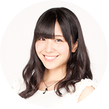

LINE UP

STORY
華々しくデビューを果たしたOver The Rainbow
メンバーのコウジ、ヒロ、カヅキは瞬く間に女子のハートを魅了し、
一気にプリズムショー界の頂点に上り詰めた。
彼らを目指して、エーデルローズには続々と新入生が入学したが、
突如「シュワルツローズ」という対立勢力が現れ、
エーデルローズは苦境に立たされる・・・
そんな時、天才作詞作曲家としてOver The Rainbowを支えてきたコウジに、
アメリカから映画音楽制作の巨額オファーが舞い込む。
4年毎に開催されるプリズムキングカップを翌年に控え、3人の進路は――？
エーデルローズ存亡の危機。
残された7人のエーデルローズ生。
シュワルツローズからの刺客。
そして、突然現れた不思議な少年。
“最も女の子の心をトキめかせたスタァ“ だけが得られる
プリズムキングになるのは、誰だ！？
STAFF & CAST
- STAFF
- 原作:伊藤 彰
- 監督:梅本 唯
- シリーズ構成:吉村 清子
- キャラクターデザイン:とみなが まり
- 色彩設計:宮脇 裕美
- 美術監督:丹伊田 輝彦
- 音楽:森 まもる
- アニメーション制作:トムス・エンタテインメント
- CAST
- 新導クロノ:石井 マーク
- 綺場シオン:榎木 淳弥
- 安城トコハ:新田 恵海
- 伊吹コウジ:宮野 真守
- 蝶野アム:愛美
- 弓月ルーナ:工藤 晴香
- ほか
EVENT CAST

石井マーク
榎木淳弥
- 
愛美
石井マーク
石井マーク
榎木淳弥
愛美
工藤春香
LIVE

愛美×工藤春香